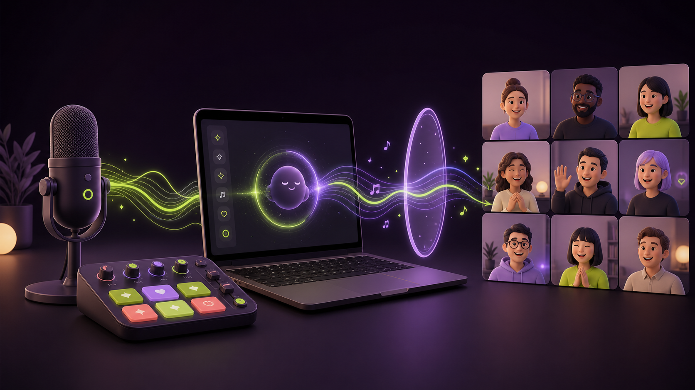

Some people need a pause before responding.

OpenAI Build Week · macOS prototype
MoodX
Fun is a doorway to participation—and value follows.
Native mixerLocal audioTeams-ready route
Begin the story ↓
Concept visual generated with AI and reviewed by the MoodX team.
01 / Problem
The room is full. The conversation is not.
Online meetings can end with the same few voices carrying the discussion while useful context stays silent—an especially visible concern in the project owner's Japanese enterprise context.
02 / Product insight
Silence is a signal, not a score.
The goal is not equal talk time. It is equal access to contribution.
Language and cultural context change response time.
Disagreement carries different social risk for each person.
A credible invitation can matter more than another prompt.
These are hypotheses to validate, not inferred explanations for any individual participant.
03 / Solution
Use energy to open the room—not merely entertain it.
- Native macOS mixer
- Nine customizable sound pads
- Mic, SFX, and master channels
- BlackHole output for Teams
- Optional English/Japanese local transcript
- One session control with Light/Dark themes
- Meeting timer + protected decision checkpoint
- Facilitator-approved 45-second Quiet Think
- No retained recording or cloud audio
Playful cues earn attention; the intended value is a safer opening for more useful perspectives to enter the meeting.
04 / Demo flow
Five moves from setup to participation.
- 01
Choose the microphoneSelect the facilitator's physical input inside MoodX.
- 02
Shape the boardUse the built-in cues or assign a local audio file to any pad.
- 03
Choose the sessionInclude or exclude the local listener, then use one Start session control.
- 04
Patch and facilitateSelect BlackHole 2ch in Teams, then use cues and the optional transcript deliberately.
- 05
Protect the decisionRun the meeting timer, invoke the checkpoint, and offer a facilitator-approved 45-second Quiet Think.
05 / System overview
The whole audio path stays on the Mac.
● Local processing boundary
Facilitator's Mac
→
→
→
Teams microphoneBlackHole 2ch
→
MeetingMic + facilitator cues
Teams speakerPhysical headphonesNever route remote audio back through BlackHole.
Optional fixed-language STT uses a separate selected input and ephemeral local windows. No upload, emotion inference, scoring, or automatic playback.
06 / Build evidence
The prototype is real. The outcome is still a hypothesis.
Verified Native build, signing, device discovery, live meter, BlackHole route, pad playback, local-file conversion, persistence, and reset.
Research direction Silent individual thinking plus an explicit, appreciated invitation is better supported than asking the room to speak immediately.
Platform reality Teams already provides polls, Q&A, reactions, timers, notes, and tasks; MoodX must prove the transition into participation.
STT implemented Explicit English/Japanese selection, separate capture, five-second local windows, ephemeral transcript, and no playback link.
Meeting rhythm implemented Configurable timer, protected final checkpoint, explicit decision prompt, and 45-second Quiet Think.
Not yet verified The Japan-based customer segment, sound's incremental value, cultural fit, contribution breadth, and effect on outcomes.
07 / Guardrails
Energy without pressure.
No autonomous emotion detection or surprise playback.
Do not rely on sound alone for decisions, warnings, or instructions.
Professional defaults; playful palettes chosen with the group.
Local customization does not remove the facilitator's rights responsibility.
08 / Validation plan
Validate before we automate.
Interview participants and facilitators about specific moments when useful input stayed silent.
Timer, protected checkpoint, risk prompt, and 45-second pause now work locally.
Run the same ritual with and without sound to learn whether fun adds value.
Make only the validated ritual repeatable, accessible, consented, and easier to deploy.
Recommended first moment: “Before we commit: what risk, question, or alternative have we not considered?”
The segment, buyer, feasibility thresholds, and sound's incremental effect remain hypotheses—not product claims.
09 / Ask
Help MoodX test the room, not score the people.
Pilot ask
Back to the start ↑
Recruit three Japan-based project teams using Teams and facilitators willing to test a consented Quiet Think decision checkpoint.